A closed-loop MLOps platform for credit risk, not a notebook of models: eleven from-scratch statistical techniques for the scoring question itself, wired into fifteen more that detect drift, retrain, deploy, canary-test, cut over, monitor realized performance, and audit the whole system — honestly, including the state where retraining fired and nobody closed the loop yet.
This page shows the project's results. The methodology, the design decisions and the limitations are documented in the repository's README.
01 · Polyglot scorecard (R + Python + C)
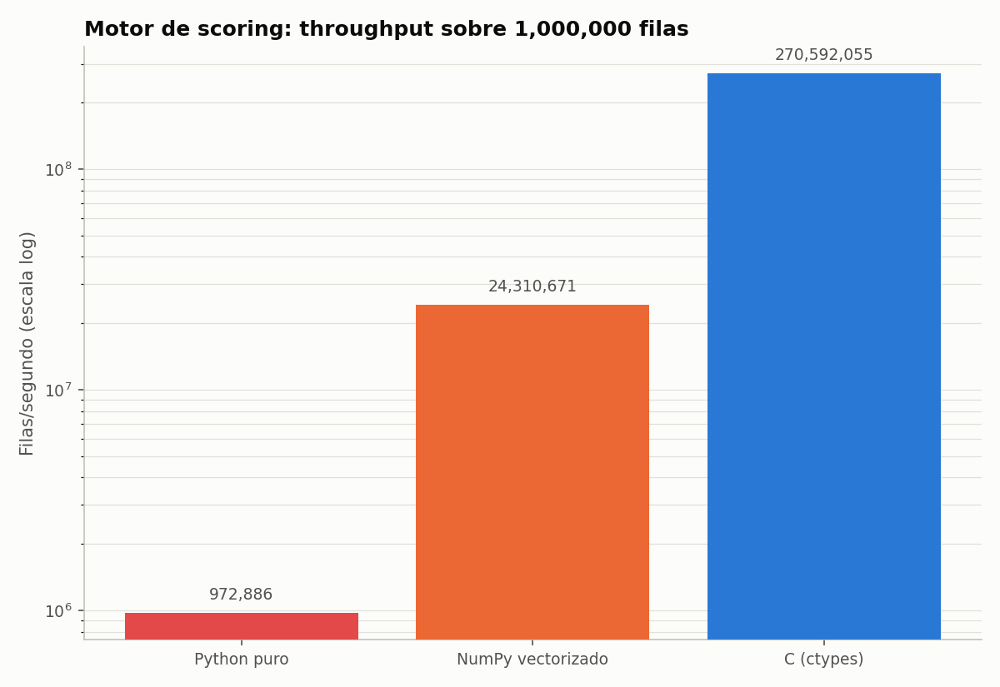
Throughput over 1,000,000 rows, log scale. The compiled engine scores 270.6M rows/second against 24.3M for vectorised NumPy and 0.97M for a pure-Python loop — and produces the same number as R's scorecard to within 4.79e-11, which is the part that makes the speed usable rather than merely impressive.
02 · Bidirectional R↔Python interop
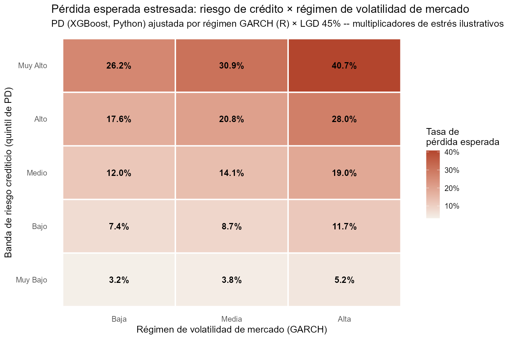
The centrepiece: expected loss per credit-risk band stressed against three market-volatility regimes — one number a risk committee can read, produced by a Python ML model and an R econometric model in the same figure.
03 · Lifetime PD from survival analysis
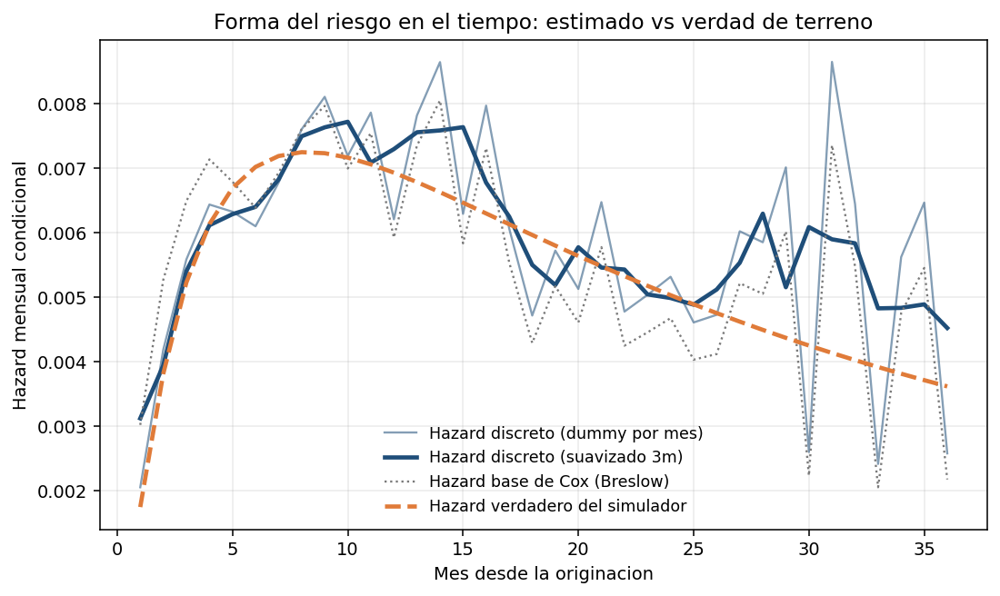
The estimated hazard against the one the simulator actually used. The seasoning hump — risk climbing after origination, peaking around month 8-10, then declining — is recovered, and the curve gets visibly noisier past month 25 as loans with 12- and 24-month terms leave the book and thin the risk set. That degradation is in the chart because it is real.
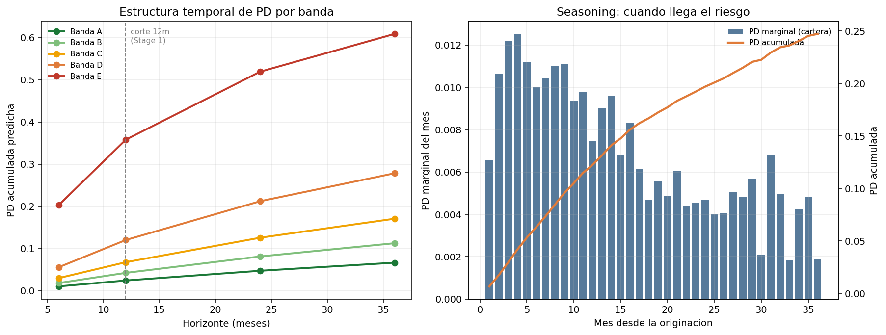
Left: cumulative PD by horizon for each risk band, with the 12-month Stage 1 cut-off marked. Right: when the risk actually arrives across the portfolio. Band A reaches 2.4% at 12 months and 6.6% over the full life — almost two thirds of its risk sits beyond the cut-off a 12-month model can see.
04 · Bayesian hierarchical scorecard
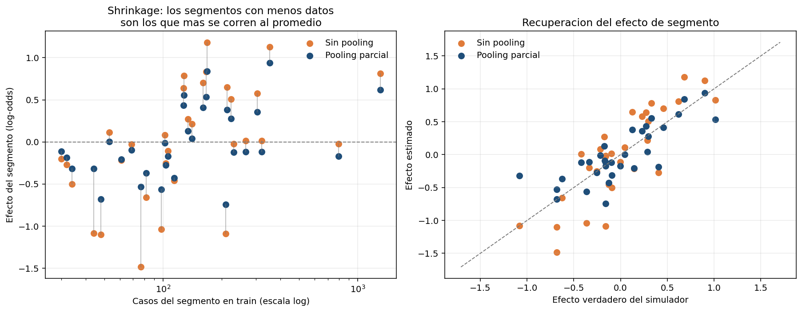
Left: each segment's estimated effect with and without pooling, against how many training cases it has (log scale). The grey lines are the shrinkage — long where the data is thin, almost invisible where it is plentiful. Right: recovery against the simulator's true effects; the pooled estimates sit closer to the diagonal.
The unconstrained model violates monotonicity for up to 97.6% of applicants on a single variable, with reversals as large as 14.5 points of PD. The constrained model's bars are invisible because they are zero — by construction, not by luck. Note also that its average response curve looks almost fine: the violations are individual-level, which is exactly the level a customer complaint or a supervisory review operates at.
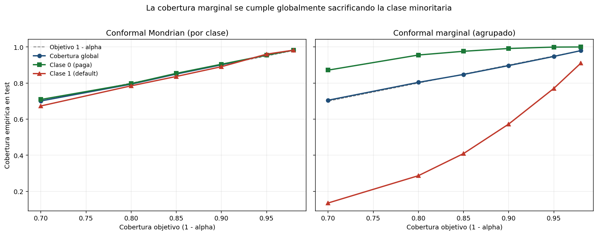
Why the class-conditional (Mondrian) variant matters. Left: coverage tracks the target for both classes. Right: the marginal version hits the same global target while covering the paying class at 99% and letting the default class fall to 57%. With a 23% base rate, "90% coverage" computed over the pooled population is almost entirely a statement about the majority class.
06 · Optimal-binning scorecard
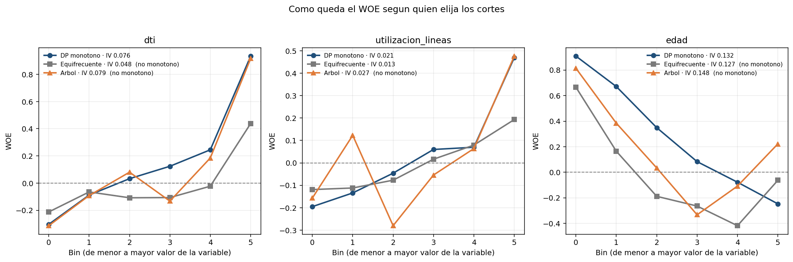
The same three variables, cut three ways. The DP produces a clean monotone WOE in every case; the tree zig-zags on line utilisation (down, up, down, up across consecutive bins) — a card no one wants to defend. On age, whose true effect is U-shaped, the monotone DP deliberately gives up IV rather than fake a shape the domain does not have.
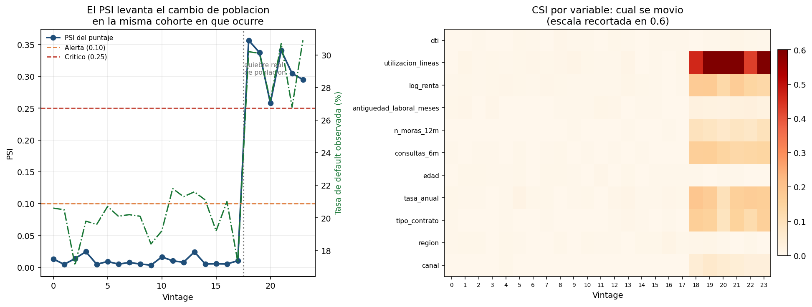
Left: PSI stays under 0.025 for eighteen stable vintages — no false alarms — and jumps to 0.36 in the exact cohort where the population breaks. Right: CSI per variable names the culprit rather than just raising a flag; line utilisation is the variable the simulator shifted hardest.
07 · Fair lending bias audit
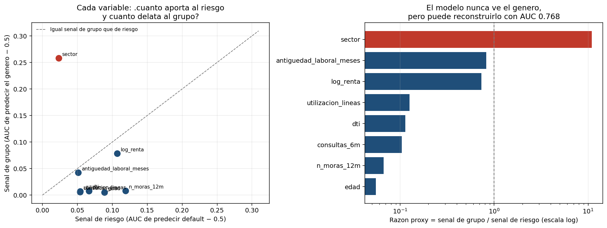
Left: each feature's group signal against its risk signal. Everything sits below the diagonal — earning its place — except sector, which carries far more information about gender than about default. Right: the same as a ratio on a log scale, with the headline above it: a model that never sees gender can reconstruct it from its own inputs with AUC 0.768.
08 · Differentially private scoring
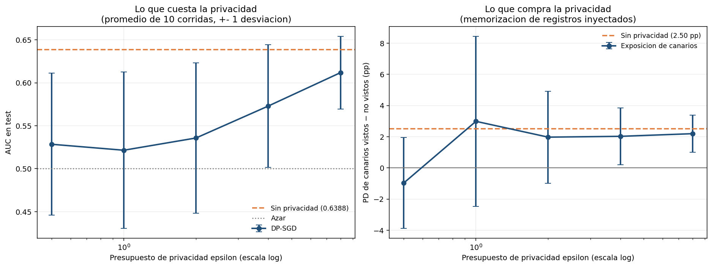
Left: what privacy costs — AUC against ε, averaged over ten independent runs with one standard deviation, against the non-private baseline. Right: what it buys — the PD gap between canaries the model trained on and identical ones it never saw. The error bars on the right are the finding: under noise the effect stops being distinguishable from zero rather than cleanly disappearing.
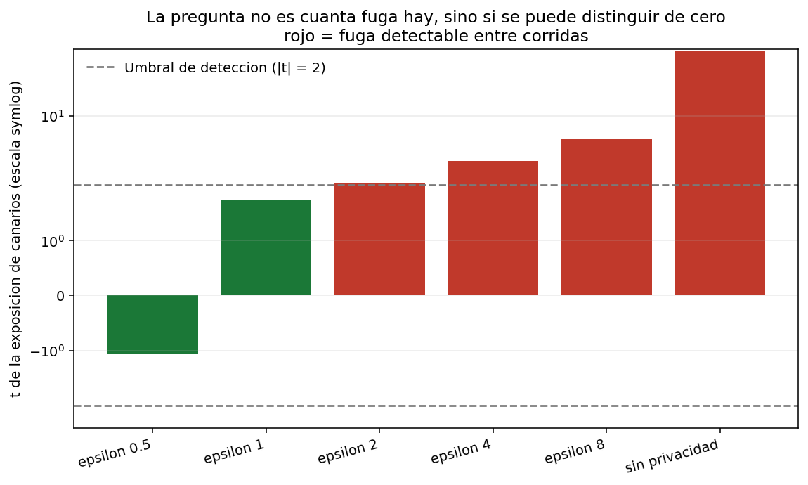
The same data asked properly: not "how much leakage" but "can it be told apart from zero". Red bars are budgets where the canary effect survives its own run-to-run variance. The leak stops being detectable between ε = 2 and ε = 1.
09 · Reject inference & selection bias
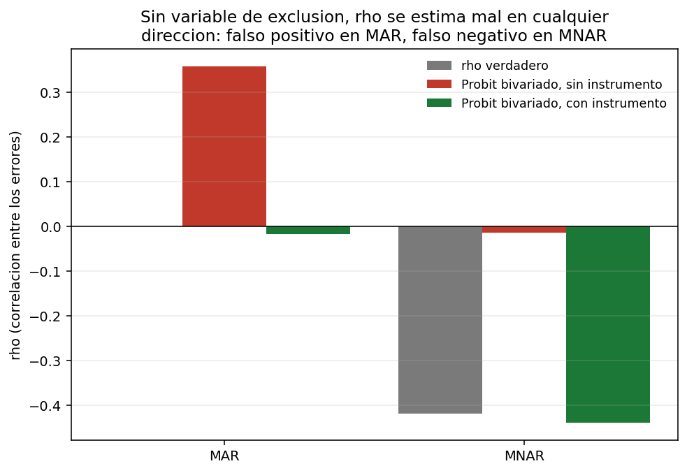
Grey is the truth. Without an exclusion restriction (red) the model invents selection bias that doesn't exist in MAR and misses bias that is very real in MNAR — sometimes the wrong sign entirely. With a genuine instrument (green, a branch-month commercial-pressure variable that moves approval but not true risk) the same estimator lands within 0.02 of both true values.
10 · Through-the-cycle vs. point-in-time PD
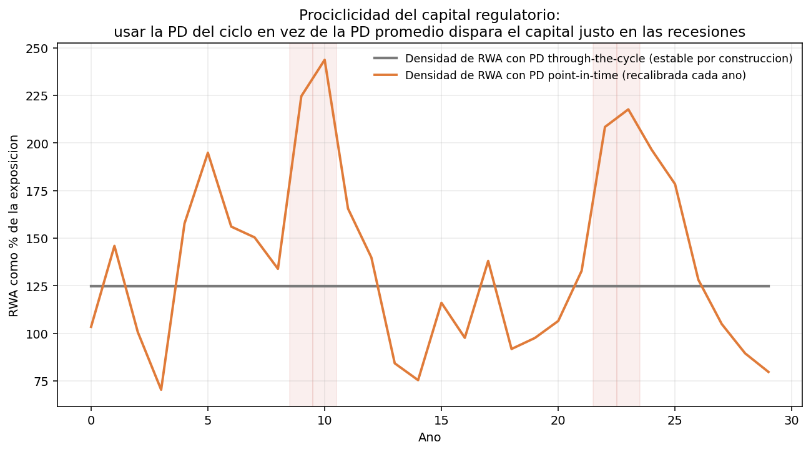
Grey: RWA density using the through-the-cycle PD — flat by construction. Orange: the same portfolio, the same Basel formula, recalibrated every year with the point-in-time PD. It swings from 70.4% to 243.6% of exposure, and the peaks land exactly on the two marked recessions.
11 · Federated credit scoring
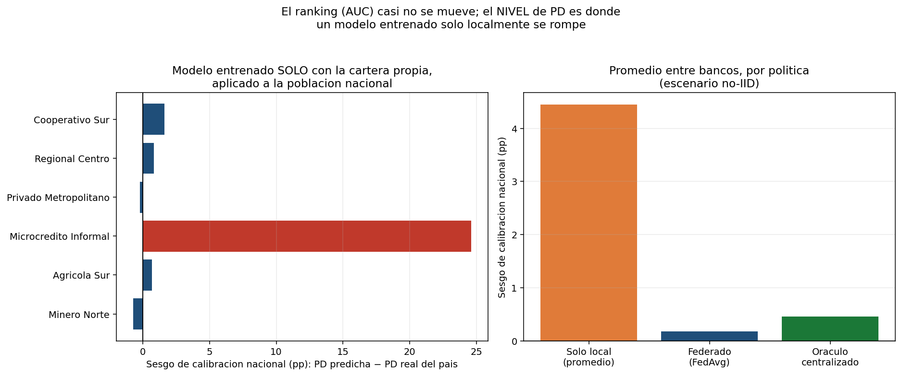
Left: each bank's own model, trained only on its own customers, applied to the national population it never saw. One bank's calibration bias is off the chart. Right: the same comparison averaged across banks, by policy.
27 · On a real book: Lending Club, 621,022 loans
Techniques 01-11 run on simulated books because their claims are recoveries of a planted truth. Folder 27 takes the claims that are not, and runs them through the same code on real Lending Club loans issued 2007-2015, fitted on 2007-2013 and tested on 2015. The monotonic constraint is still free and conformal coverage holds a year later; the scorecard no longer beats gradient boosting, the binning methods tie, 72% of lifetime risk arrives after month 12 (50.5% simulated), a rating grade's asset correlation is 0.00-0.06 rather than 0.12-0.24, and the retraining rule fires on AUC every quarter while missing a 2.5-point PD understatement.
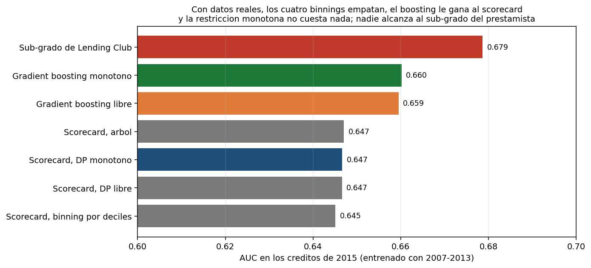
AUC on the 2015 loans for models fitted on 2007-2013. The four binnings tie, gradient boosting beats the scorecard, the monotonic constraint costs nothing, and Lending Club's own sub-grade, priced with the full credit report, beats them all.